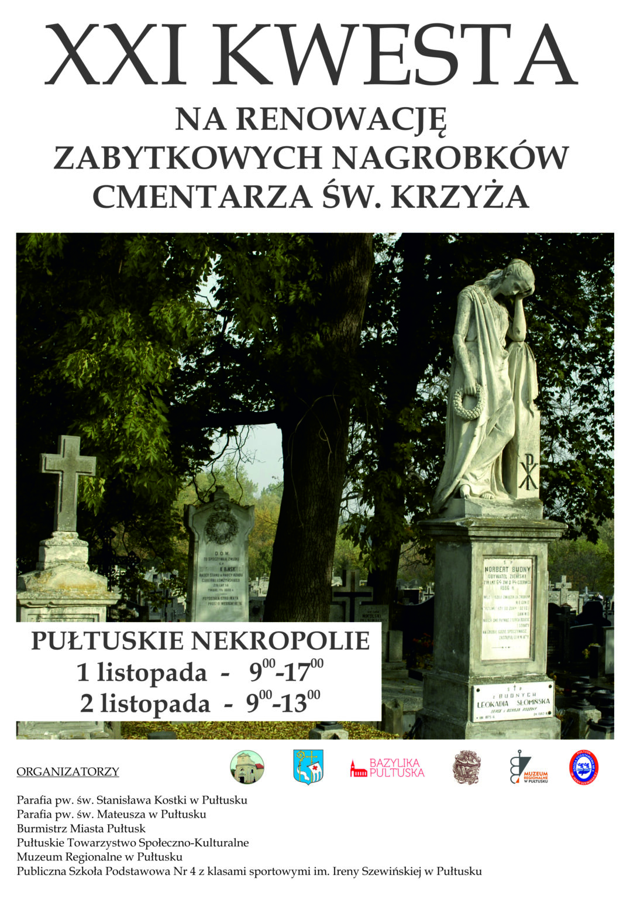

Rok 2025 - XXI KWESTA

Zebraliśmy rekordowe 28 tys. PLN!
Tegoroczna kwesta prowadzona w dniach 1-2 listopada na obu pułtuskich nekropoliach udowodniła hojność ludzi odwiedzających nasze cmentarze.
Nasi wolontariusze zebrali:
🔘28 612,24 zł
🔘18 EUR
🔘1 funt brytyjski
🔘1 żeton dyskontu z zagranicznym kapitałem
Dziękujemy wszystkim darczyńcom!
Dziękujemy osobom oraz instytucjom zaangażowanym w organizację i przeprowadzenie zbiórki: parafiom św. Stanisława Kostki i św. Mateusza, samorządom Gminy Pułtusk i Powiatu Pułtuskiego (władze, urzędnicy, radni), Muzeum Regionalnemu w Pułtusku, Pułtuskiej Bibliotece Publicznej, rekonstruktorom z GRH 13 Pułku Piechoty, członkom Pułtuskiego Kolarstwa Przygodowego i Pułtuskiego Stowarzyszenia Motocyklowego, uczniom szkół podstawowych nr 1, nr 4 i w Przemiarowie, uczniom LO im. Piotra Skargi, druhom i druhnom z OSP Grabówiec i OSP Przemiarowo, członkom i sympatykom PTS-K.
Składamy ogromne podziękowania wszystkim, którzy zdecydowali się poświęcić swój czas by stanąć w bramach cmentarnych z puszkami i przyczynić się do ratowania naszych zabytków.
Zebrane środki przeznaczyliśmy na renowację nagrobka Tadeusza Nicefora Tyskiego (1838-1917), powstańca styczniowego.